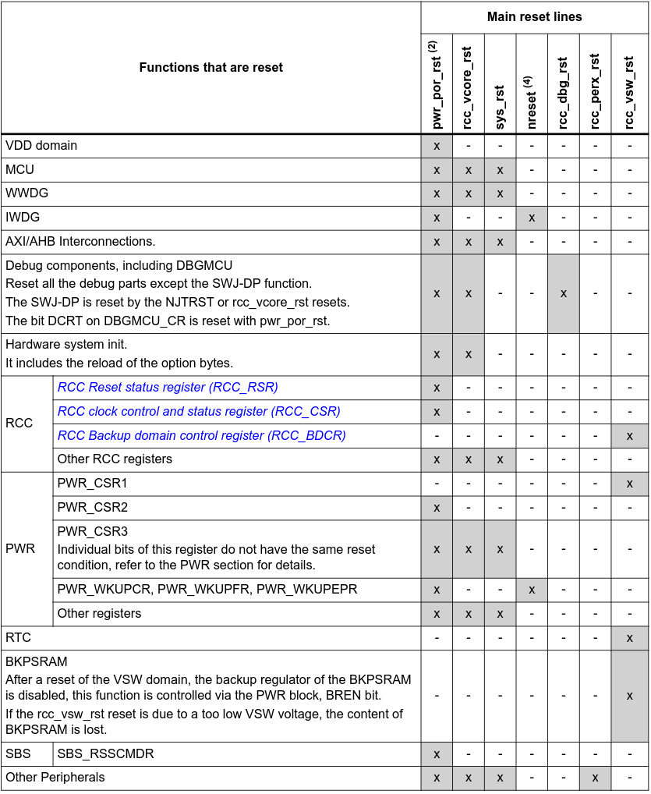
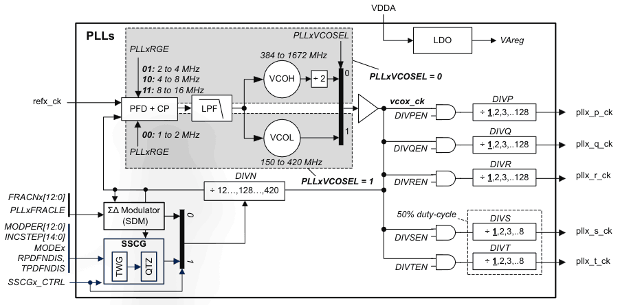
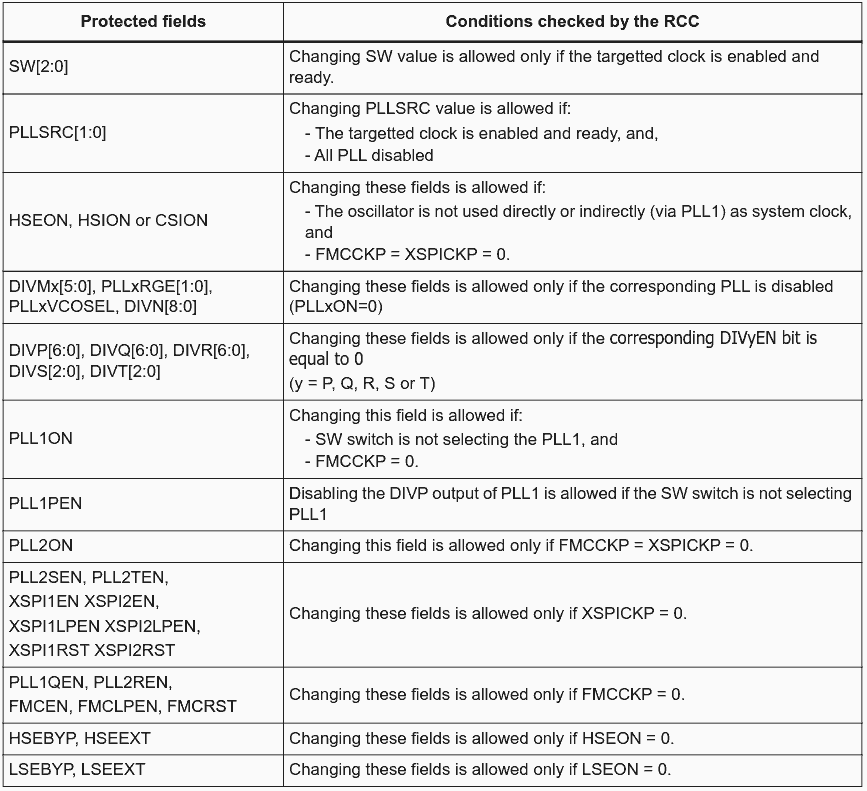
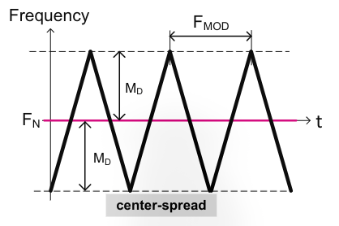
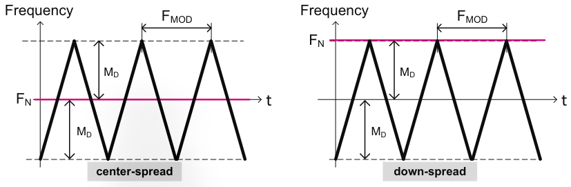
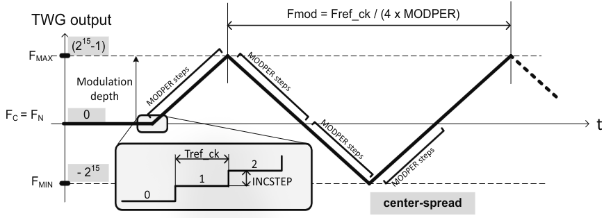
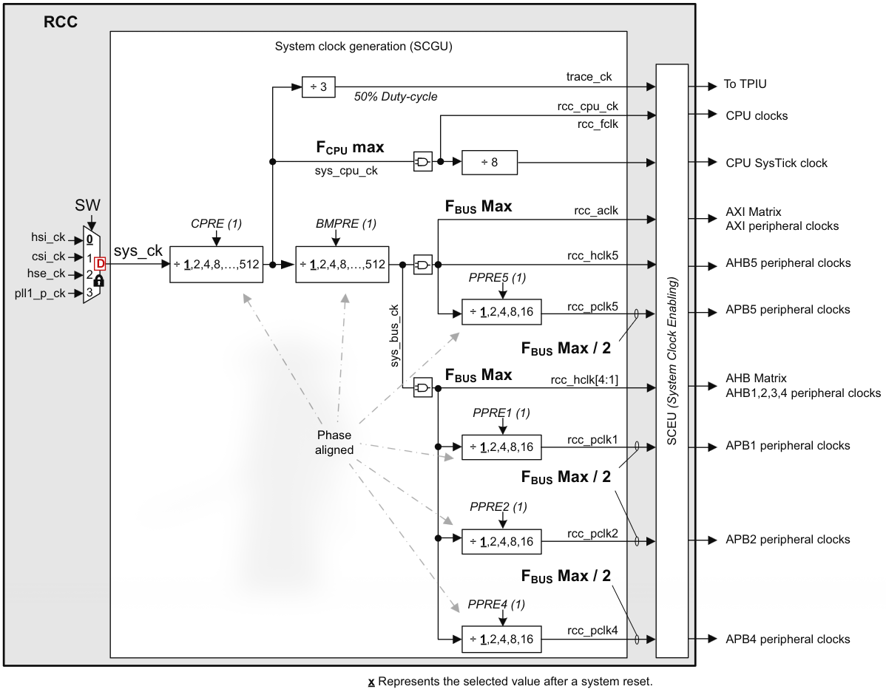

Contents
STM32H7RS Reset and Clock Controller (RCC) - H7R/H7S series
I don't know about you, but I went a long time hearing all these terms - PLL, CSI, AHB - thrown around without really understanding what they are beyond "yeah it's some clock stuff", so I wrote this article to finally change that.
Hopefully you're a fan of bookkeeping, because while resets & clock trees may not be the most complex topic, they certainly have a lot of surface area that needs to get tracked - especially with the STM32H7S3L8. I mean, this is easily the longest article on Micropedia by a mile, and will likely remain this way until I get into something like the USB or FDCAN peripherals at some point.
Important Note
Some of the info on this page is taken from the STMicroelectronics - STM32H7 RCC Presentation, which is an excellent educational resource from ST, however despite the STM32H7S3 technically fitting into the MCU that this presentation covers, it actually has some inaccurate information. The STM32H7RS reference manual (RM0477) is treated as authoritative in such instances, as this article is written with the Nucleo-STM32H7S3L8 as the target MCU. Concepts still apply to other STM32 microcontrollers, however some features are STM32H7RS-exclusive or specific, so keep that in mind.
PWR Block
If you just came here for RCC, I'm sorry to disappoint you, but you should probably look at the PWR section first - STMicroelectronics themselves recommend reading up on that before looking at RCC, they're tighly coupled due to power modes and POR/BOR coming up.
The good thing is, PWR is only ~70 pages in the reference manual, which is noticeably shorter. It's also noticeably easier to learn than RCC, speaking from experience.
Overview
RCC stands for Reset and Clock Ccontroller, and it does exactly that: controls and manages resets and clock generation.
The term 'resets' is actually an umbrella term for 3 different types of reset:
- system reset: resets all registers, except for certain ones in the PWR and RCC blocks, and it also doesn't reset the backup domain
- power reset: resets all logic in
VDDandVCOREdomains, except the backup domain, and it also triggers a system reset (NRSTpin is asserted during a system reset) - backup domain reset: resets the backup domain and
RCC_BDCR, for when you want to reset the RTC and LSE
And the RCC handles all of those, as mentioned in the STM32H7RS Architecture Overview.
In terms of clocks, both the general H7x and the H7RS have:
- 4 internal oscillators
- 2 external oscillators
- 3 phase-locked loops (PLLs)
That's a lot of clocks, and for good reason! With this many options, the programmer can choose from a wide array of sources for different power-consumption and accuracy goals for different peripherals (e.g. you can comfortably use a different clock to avoid altering up baud rates for UART).
On the generic H7x family, you also have 3 different 'domains' to sort of partition the system based off needed clock speeds, but the H7RS unifies the system by skipping the domains, so this article won't talk about them beyond this point.
Resets
Reset Generation
Multiple reset signals get fed into the RCC block, within which there is logic to execute any kind of reset - as RM0477 says, "The RCC handles the reset generation for the complete product". So, a block doesn't actually generate the reset itself, it simply 'requests' the RCC to do it on its behalf. For example, the PWR block doesn't trigger a power reset itself when it detects a BOR voltage violation - it just sets the pwr_bor_rst bit and it's off to the RCC to handle it.
But the RCC doesn't just generate the reset and call it a day - upon the completion of a reset, it also sets a readable flag to indicate the source of the reset.
Reset Sources
The example above mentioned the PWR block, but there are a multitude of sources which can signal a reset-worthy event to the RCC. I outline them here.
Reset From PWR Block
Possible reset signals:
pwr_por_rst: VDD voltage is below VPOR thresholdpwr_bor_rst: VDD voltage is below VBOR thresholdpwr_vcore_ok: VCORE supply is invalid/unavailable*pwr_vsw_rst: VSW voltage is below threshold, backup domain relatedrcc_vcore_rst: generated frompwr_vcore_ok, except this one stays asserted until the option-byte loading (OBL) operation completes
Resets from PWR block are power resets, 1 of the 3 types outlined above.
* Since VCORE is switched off in STANDBY mode, this signal is also generated when exiting STANDBY. Furthermore, when VDD is invalid, this is also generated.
Application & System Resets
After a reset, if your RCC says sys_rst, that's a system reset. What it does is set most device registers to their default value, unless otherwise specified in the reference manual.
An application reset nreset is just the same, except it doesn't get asserted when the system exits from STANDBY mode.
A system reset can be triggered by:
- asserting on the NRST pin (external reset)
- POR/BOR voltage violations (
pwr_por_rst/pwr_bor_rst) - independent watchdog resets (
iwdg_out_rst) - window watchdog, depending on configuration (
wwdg_out_rst) - exit from standby (
rcc_vcore_ok) - software-generated reset using Cortex-M7's SYSRESETREQ signal - RM0477 also calls it SFTRESET
- entering a low-power mode with the low-power mode reset option bytes cleared (small section at the end of the PWR article if you're curious)
- flash-triggered due to option byte reload request
NRST pin reset
This pin can be used for an external reset, like one STM32 resetting another.
It idles at 1 (active low) so in order to signal a reset, it needs to have 0 asserted on it. And it doesn't matter how long the 0 is asserted for - it could be a single clock cycle - the NRST pin has a pulse stretcher that guarantees a signal will be stretched to at least 20 microseconds to fully propagate the reset.
The actual reset triggered is an application reset - you'll see nreset asserted upon the reset.
Low-Power Mode Security Reset
Briefly mentioned in the Application & System Resets section above, the purpose of this is to avoid critical applications from unintentionally entering STOP/STANDBY modes.
When you clear the option bytes nRST_STOP or nRST_STANDBY, a system reset will be initiated if the device mistakenly enters STOP or STANDBY mode respectively.
If the latter happens (STANDBY), a flag is also set in the PWR controller.
On the H7S3L8, RCC_RSR has a bit set to indicate this reset occurred.
Backup Domain Reset
The backup domain, which has the RTC, backup RTC registers, and backup SRAM, can be reset in the 2 ways, both of which do it differently:
- software reset via
RCC_BDCR, which sets all RTC registers andRCC_BDCRto their default values, exceptLSEDRVwhich remains unchanged isLSEON= 1. Backup SRAM is not affected - VSW voltage is outside of operating range (VSW is the direct voltage from VDD/VBAT). All RTC registers and
RCC_BDCRare reset to their default values, and the backup SRAM becomes invalid
Coresight Debug Reset
A debugger-related reset so you can enter debug mode on your board.
It only* occurs when a rcc_vcore_rst reset occurs (upon a power-on reset, or exiting STANDBY mode).
* If you read RM0477 yourself, you'll find it also claims this can be triggered by setting the CDBGRSTREQ bit in DP_CTRLSTAT over the DAP, and the reset will remain for as long as the bit is asserted. However, in the same document, CDBGRSTREQ is listed as being “not used in this device”. So, check the reference manual for your specific board if you plan on using this feature.
Option Bytes Loading (OBL)
This isn't a reset in itself, instead it's more like a process that gatekeeps a system reset until the option bytes finish loading.
It happens:
- after a power-on reset (
pwr_por_rst) - after an exit from STANDBY mode
- when the flash block requests a reload of option bytes
And it will keep the system in reset until the option bytes are loaded.
Peripheral Resets
The software can reset any peripheral, at any time, on demand.
On the STM32H7RS family, you can reset any peripheral using the RCC_xxxxRSTR, where xxxx is the bus on which the peripheral is on.
The register has a bit like:
- reset
GPIOx - reset
UARTx - reset
I2Cx - etc.
And that lets you reset a certain peripheral, like GPIOB, by just setting the bit and then clearing it. You just need to find the right register.
CRYP, SAES, and HASH can all also be reset in this way, which you'd usually do in a tamper event.
Reset Coverage
RM0477 provides Table 56 (shown below), which checks a box if a particular reset affects a particular part of the board.
If you want to reset a specific part of your MCU, have a look at what options you have using that table!

Clocks
This is the other half of the RCC's role.
Here are the available clock generators on the H7RS:
- HSI (high-speed internal) at 8/16/32/64 MHz*
- HSE (high-speed external) at 4-50 MHz
- LSE (low-speed external) at 32 KHz
- LSI (low-speed internal) at 32 KHz*
- CSI (low-power internal) at 4 MHz*
- HSI48 (high-speed internal) at 48 MHz*
* These oscillators don't generate the exact stated value, they just generate a rough one that hits the target 'close enough'. Notice that they're all internal oscillators - this is because the external oscillators are more accurate.
Clock Naming
RM0477 uses 3 names for different clocks:
- Peripheral clock
- CPU clock
- Bus matrix clock
Peripheral Clock
As the name implies, these are provided to peripherals by the RCC.
The notable thing is that ’peripheral' in this case means the on-board ones, not something external like a screen or sensor. Solely the ones connected directly over the AHB/ABP/AXI buses.
There are 2 types of peripheral clocks:
- Bus interface
- Kernel
Bus interface clocks are provided to all peripherals and they're used for accessing the peripheral's registers to do things like configuration. Generally this is the AHB/ABP/AXI clock, wherever the peripheral is connected (e.g. I2C2 is connected on the APB1 bus, so you'd use the RCC_APB1ENR1 register and set the I2C2EN bit)
The kernel clock is for peripherals which have functionality that needs some form of regular timing (sending/sampling data), to survive ultra low-power modes, or a very specific clock speed that is unrealistic to achieve with the bus clock. Generally it's used for (not an exhaustive list):
- UART
- SPI
- I2C
- USB
But you can just use a bus clock only for:
- RCC itself
- GPIO
- EXTI
- PWR
Hopefully you see the pattern - when you need to talk to the real world or need a specific speed (UART baud rate), you enable the kernel clock.
There are benefits to this.
Normally, many peripherals are connected to a single bus. For example, if you want I2C1 and I2C2 both talking at different speeds, you'd find it rather impossible to (unless you keep re-configuring the bus speed every time you want to go from using one I2C to the other, of course!). With a bus & kernel clock, you* can use the bus clock to talk to the peripheral's registers for things like configuration, and use the kernel clock for the actual data transfers, shift registers, etc.
Besides not needing to share the clock speed for every peripheral, decoupling the clocks also means you can set a highly specific clock speed for one peripheral (e.g. you will often find it hard to get the exact UART baud rate you need just from the bus clock, which is where you'd give UART its own kernel clock and configure it to your desire to get your clean baud rate).
Low-power modes are another consideration - in STOP/STANDBY, the bus clocks are disabled and the only way you can keep a clock active is through something like the LSE, which can be used as the kernel clock for peripherals so they remain online, with bus clocks that's not possible.
At the end of the day, the key takeaway here is that you need to remember that for some peripherals you'll need to enable only the bus clock, and for others you'll need to enable the bus clock and enable/configure the kernel clock.
* I say 'you', but which bus clock gets used is actually automatic. You only enable and configure them.
What a mouthful...
CPU Clock
Derived from sys_ck (system clock), and as the name suggests, it's provided to the CPU for its functionality.
Note I say 'derived from'; it is NOT sys_ck, it just uses it to create the CPU clock.
Bus Matrix Clocks
These are the bus clocks themselves (same ones that get provided to peripherals), and they go to AHB/APB/AXI.
They're also drived from sys_ck.
Oscillators
What Are Oscillators?
I've mentioned 'oscillators' a couple of times, and I will mention them a lot more right after this.
But what are they?
Here's the Cambridge Dictionary definition of oscillate: "To move repeatedly from one position to another."
That's exactly what a microcontroller's oscillator is - a 'thing' which repeatedly moves from 1 to 0 and back at unfathomable speeds (millions of times per second), and each tick from 1-to-0 or 0-to-1 causes the MCU to execute an instruction, like adding 2 numbers together.
And when I say 'thing', what I mean is that an oscillator is typically a crystal (yes, like the ones some people collect for fun). Usually they're highly-pure, lab-grown quartz crystals which generate the oscillating electrical circuit through something called the Piezoelectric effect (it's interesting, you can look it up, I'm mostly focusing on software & software concepts here).
Time to get into the details of the clock generators themselves and understand when to use each and how.
High-Speed External (HSE)
Accurate, high-speed.
Clock Generation
HSE can be generated in 2 ways:
- External clock source (bypass)
- External resonator
The Nucleo-STM32H7RS boards come with an X1 crystal which is capable of 24 MHz, this is referring to option 2 from the list above.
When using external clock sources, you can use an analog source as the STM32H7RS has a built-in clock squarer.
External Clock Source
When not using the oscillator, you can provide your own clock source to the OSC_IN pin:
HSEONis set to 1HSEBYPis set to 1OSC_OUTpin is left high-impedance (not floating)
For a digital clock source, also set HSEEXT to 1. For an analog one, set it to 0.
External Resonator
The Nucleo-STM32H7RS boards all come with a 24 MHz X1 crystal, so you don't have to externally plug one in.
If you want to use it, you need to set these bits:
HSEON= 1HSEBYP= 0
If you use the on-board oscillator provided by ST, that's all for this step, otherwise look at an official STMicroelectronics on how to connect your own crystal.
HSE Ready
HSERDY is a flag which indicates whether the HSE has a valid clock source at hse_ck (that's the actual clock source line which gets used). 256 valid cycles of the HSE need to be detected and HSEON needs to be 1 for HSERDY to go to 1, after which the clock is released.
When HSERDY goes to 1 an interrupt can be enabled using the RCC_CIER (this can be done for all clocks, not just HSE).
So the HSE can be turned on/off in software using that bit, but there are times when the hardware will refuse:
- if HSE is used as the system clock directly
- if HSE is used as reference for PLL1, and PLL1 is enabled and providing the system clock
- if either of
XSPICKPorFMCCKPare set to 1
Additionally, HSEEXT and HSEBYP can't be modified when HSEON is 1.
To mention it again from the PWR article, HSE is turned off upon entering STOP/STANDBY modes.
HSE Programming Sequence
On the STM32H7RS, you can initialise the HSE using the following sequence:
- HSE is the system clock in any capacity, switch over to HSI/CSI first
- Flip
XSPICKPandFMCCKPto 0 (if they're not already) - Disable HSE with
HSEON= 0 - Disabling isn't instant, so wait until
HSERDY= 0 - Configure to your desired configuration through
HSEBYPandHSEEXT - Re-enable
HSEON(set it to 1) - Wait for
HSERDY= 1
Your HSE is now ready to use!
Low-Speed External (LSE)
Accurate, low-speed.
The clock generation diagram for LSE is almost identical to HSE, so a lot of the details overlap.
Like the HSE, LSE can generate a clock source through 2 methods:
- external clock source (bypass)
- external crystal
The Nucleo-STM32H7RS boards come shipped with an X2 crystal capable of 32.768 KHz, this is referring to option 2 from the list above.
External Clock Source
When not using the oscillator, you can provide your own clock source through the OSC32_IN pin:
LSEON= 1LSEBYP= 1OSC32_OUTpin is left high-impedance (think of it as disconnected - the PWR block article has an explanation on this)
For a digital clock source, also set LSEEXT to 1. For an analog source, set it to 0.
If you choose this option, you can plug a clock source in of speeds up to 1 MHz.
Note: when using the RTC with LSE bypass mode, the LSE must not be configured to use a digital clock signal, only an analog one.
LSEON,LSEBYP,LSEEXT, andLSEDRVare all located inside theRCC_BDCRregister (LSE is part of the backup domain - that's why). That register is write-protected by default. To modify it, set theDBPbit of thePWR_CR1register to 1.
External Resonator
The STM32H7RS boards all come with a 32.768 KHz X2 crystal, so you don't have to externally plug one in.
If you want to use it, first* optionally set the LSEDRV bits inside RCC_BDCR for the driving capability:
00for lowest drive01for medium-low drive10for medium-high drive (default after backup domain reset ifLSEON= 0)11for highest drive
What 'driving capability' means is how much energy the circuit provides to the crystal to keep it oscillating. Just as perfect things don't really exist, crystals aren't perfect resonators meaning they lose some energy on each cycle. The higher the drive, the more energy provided to compensate for this loss and keep the crystal running - however, too high drive and the crystal's lifetime will shorten, too low drive and it may fail to start altogether.
You need to find the balance, but how you do that is not something I know yet.
Then, you need to set these bits:
LSEON= 1LSEBYP= 0
* Make sure you configure LSEDRV while LSEON is 0, not doing so will put your firmware outside of the technical specification and prone to undefined behaviour.
If you use the on-board X2 oscillator provided by ST, that's all for this step, otherwise look at an official STMicroelectronics on how to connect your own crystal.
32.768 KHz?
Side note to the curious enough - why such a specific value for the LSE?
If you've worked with powers of 2 or standard integer sizes, you might almost immediatley realise that 32,768 is 2 to the power of 15. It's also half of a 16-bit integer (which is 65,536), which I've become all too familiar with thanks to all of this bare-metal stuff...
Simply put, having an oscillator which reliably and accurately generates 2^15 oscillations per second means you can do useful things like chain-divide the clock by 2, fifteen times in a row to get a perfect 1 KHz clock (or divide the clock by 128, then by 256 - that's one way to do it on the STM32 since there aren't 15 dividers in a row to use).
This makes it useful for the Real-Time Clock (RTC) in our situation.
Also, 32.768 KHz is a 'perfect' enough frequency when it comes to compromising between size and power-consumption.
It's actually one of the most (if not the most) used basic oscillator frequencies for electronics these days.
LSE Ready
LSERDY is a flag which indicates whether the LSE has a valid clock source at lse_ck (that's the actual clock source line which gets used). 4,096 valid cycles of the LSE need to be detected and LSEON needs to be 1 for LSERDY to go to 1, after which the RCC waits an extra 8 cycles before releasing the LSE's gate.
When LSERDY goes to 1 an interrupt can be enabled using the RCC_CIER (this can be done for all clocks, not just LSE).
Just like HSE, LSE's control bits can not be modified while LSEON is 1.
Unlike HSE, LSE stays on when entering STOP, STANDBY, and VBAT modes, as it's part of the backup domain.
LSE Programming Sequence
Here's how to modify the LSE's configuration through software:
- Allow writing by setting the
DBPbit inPWR_CR1 - Disable the LSE with
LSEON= 1 - Wait for
LSERDYto clear - Configure
LSEBYP,LSEEXT, andLSEDRVto your liking (note thatLSEDRVwill only have an effect when using a crystal oscillator, not when using a clock signal) - Set
LSEONto 1 when ready - Wait for
LSERDYto turn to 1 - Clear
DBPas it's not needed for now
High-Speed External (HSI)
Less accurate, high-speed.
This is the default system clock after a reset. The benefits are that it's cheaper for the final product as it's integrated and removes the need of an external crystal, and it starts up faster than an external oscillator (in microseconds). However it's less accurate than an external crystal, even when calibrated.
For most regular firmware, the accuracy margin is small anyway and won't be an issue (about 0.5% in either direction according to the datasheet), however the HSE is always there when accurate clocks are needed.
HSI Configuration
HSI's output frequency can be set at 8, 16, 32, or 64 MHz using a predriver (the predriver is controlled by HSIDIV).
As you might've guessed by now, it can also be switched on with the HSION bit set to 1.
And just like with the other clocks, HSION can not be modified if any of these are true:
- HSI is used directly as the system clock
- HSI is used as reference for PLL1 and PLL1 is used as the system clock
- either of
XSPICKP/FMCCKPis 1
HSIDIV also has some modification rules:
- can't be modified if HSI is used as reference for any enabled PLL
- can still be modified if HSI is directly used as a system clock
As with the previous clocks, HSIRDY = 1 indicates the clock is ready and is no longer gated off. There is no clock on hsi_ck until it is set.
When entering STOP mode, HSI can optionally be kept on. When entering STANDBY, it is turned off.
HSI Kernel Clock
When using peripherals that need a kernel clock, keep in mind:
- when exiting STOP mode via a kernel clock request, it takes time for the HSI to wake up
- HSI is less accurate than HSE, so for things like UART baud rate, it might be better to use HSE/LSE
HSI Calibration
The HSI is factory calibrated by STMicroelectronics, but you can recalibrate it based off what kind of environment your MCU will be in.
You set these bits in the RCC_HSICFGR:
HSICAL(12-bit field)HSITRIM(7-bit field)
I'm not sure how calibrating itself works - it's not a feature I will realistically need for now, so I will update this section once I learn more about it.
Low-Power Internal (CSI)
Despite its seemingly random acronym derivation (seriously, where did they actually get CSI from?), it's mostly similar to the HSI:
- Can be used as system clock, peripheral clock, or PLL input
- Low cost due to integrated crystal
- Similar, faster-than-HSE startup
- Less accurate than external crystal, even with calibration
The main differences are that CSI is very low-power, which also means it runs at a lower clock speed. It's capable of 4 MHz while the HSI is capable of up to 64 MHz.
CSI Configuration
In a similar fashion to the others, CSI can be
- turned on/off with the
CSIONbit - checked if it's on/off with the
CSIRDYbit - modified, as long as
CSIONis 0, it's not used as the system clock (directly or indirectly), andXSPICKPandFMCCKPare 0 - optionally kept alive when the system enters SLEEP mode
CSI Kernel Clock
CSI wakes up faster than HSI, that's the main differentiator (besides speed) for its usage as a kernel clock.
When using peripherals that need a kernel clock, keep in mind:
- when exiting STOP mode via a kernel clock request, it takes time for the CSI to wake up
- CSI is less accurate than HSE, so for things like UART baud rate, it might be better to use HSE/LSE
CSI Calibration
The CSI is factory calibrated by STMicroelectronics, but you can recalibrate it based off what kind of environment your MCU will be in.
Just as the HSI Calibration section, this isn't something I see myself needing in any capacity for now, so I will update this section once I learn more about it.
HSI48 Oscillator
This is a clock which runs (as accurately as it possibly can) at 48 MHz. It can be used as a kernel clock for some peripherals.
It has one main goal: be an accurate clock for full-speed USB peripherals by means of a special Clock Recovery System (CRS).
Warning before you read the rest: it will be filled with abbreviations and acronyms from the USB specification. I will not be explaining them because they take too long to understand - the specification is some 650 pages long and I spent 2 months learning about it, which still wasn't enough to get a fully working USB stack for a Raspberry Pi Pico I worked with. So you can read and skip over the keywords you don't understand.
The CRS can use the USB SOF packets, the LSE, or an external signal to fine-tune the clock speed on-the-fly.
Just like the HSI and CSI, it can be calibrated, and as someone who plans on using the USB at some point, it might not be too long until I read up on how it all works and update this article. Despite the calibration value changing with the CRS, every time the MCU has a power-on reset or exits STANDBY mode, it reloads the factory calibration value.
And yet another list of rapid-fire trivia about the current oscillator:
- HSI48 is disabled when entering STOP/STANDBY modes
HSI48ONis used to turn it on/offHSI48RDYis what indicates if it is on/off- it can't be used as a system clock, so it can be modified without worrying about bricking the system (phew...)
Low-Speed Internal (LSI)
Very low-power, slow oscillator.
As you probably know, this is one of the clocks that's never disabled automatically when entering STOP/STANDBY modes. This is as it can be used for watchdog and Auto-Wakeup Unit (AWU) wake-ups from these modes. If the independent watchdow (IWDG) is on and running, LSI is forced on and can not be disabled, as a failsafe from bricking your MCU.
It runs slowly, trying to keep at around 32 KHz.
As with all clocks, here's more of the same copy-pasted information with the clock name changed
LSIONturns it on/offLSIRDYchecks if it's on/off- that's all for this one, most of the important info about it is above this list, so it's pretty minimal
Clock Security System (CSS)
Briefly mentioned before when saying the HSI can be a fallback for HSE/LSE. That's exactly the role of the CSS. Luckily not the web-dev CSS, I was glad to find out ;)
The STM32H7RS is capable enough to detect a failure on the HSE/LSE external oscillators. In the event of such a failure, the CSS functionality kicks in to keep the system alive through a fallback.
CSS On HSE
Enabling CSS on HSE is done by setting the HSECSSON bit to 1, regardless of what the HSEON bit is.
This seems counter-intuitive, but the CSS doesn't actually work if the HSE isn't on (HSERDY is 0), which means it also doesn't work in STOP/STANDBY modes.
HSECSSON is also write-once-per-system-reset only, so once you write 1 to it, software is no longer able to directly clear it. It is automatically cleared by hardware when a system reset (sys_rst) happens or STANDBY is entered.
When a failure is detected on the HSE, here's how it's handled:
rcc_hsecss_failis set to 1- if
STOPWUCKis 0, HSI is enabled and selected as the system clock, otherwise the CSI is enabled and selected instead - HSE is disabled
- if HSE output was used for any PLLs, said PLLs are also disabled
XSPI1SEL/XSPI2SELbits switch to recovery position (in theRCC_CCIPR1register)FMCSELgoes to recovery position (if PLL1/2 is disabled and FMCSEL is in position 1/2)rcc_hsecss_failis also sent to break the inputs of advanced-control timers (TIM1, TIM15, TIM16, TIM17)- NMI interrupt is generated (one of the highest-priority interrupts) so the MCU can run rescue operations*
- a tamper event can also be triggered for clearing backup SRAM/register contents
** The interrupt is asserted until the HSECSSF bit is cleared, which can't be done directly as it's read-only. You clear it by writing 1 to HSECSSC in RCC_CICR.
CSS On LSE
Similar concept as the HSE - enable CSS with LSECSSON. This is different from the HSE CSS enable bit as when it is set actually matters. To enable LSECSSON, you need LSEON/LSERDY to be 1, and RTCSEL to have been chosen.
Unlike HSECSSON, software is able to clear LSECSSON after a failure detection. It's cleared by a backup domain reset, be it hardware (rcc_vsw_rst) or software (VSWRST).
Not only that, but CSS can be rearmed for LSE, meaning software can decide to take action (backup domain reset) immediately, or only after several LSE failures.
CSS on LSE works in all power modes: RUN/SLEEP/STOP/STANDBY/VBAT
There are 2 flags the CSS can generate in failure events:
LSECSSD, which exists even in VBAT mode (as its in theRCC_BDCRregister)LSECSSF, which generates an interrupt on failure, but doesn't persist in VBAT mode (it's in theRCC_CIFRregister)
Enabling LSE with CSS
This is the specification-approved method of enabling CSS on LSE:
- Follow the standard LSE enabling procedure from the Low-Speed External (LSE) section above, except the last step where you set
DBPto 0 - Select LSE clock with
RTCSEL[1:0] - Enable CSS on LSE with
LSECSSON - Now set
DBPto 0 if you want to write-protectRCC_BDCR
LSE Failures
In the event of an LSE failure, the CSS executes the following actions:
- Stop using LSE to clock RTC
RTCSEL/LSECSSON/LSEONare all left unchanged by the hardwarercc_lsecss_failevent is generated which can be used by the firmware to wake up from STANDBY, and to protect the backup SRAM/registers through a tamper event (which is generated even in VBAT mode)LSECSSFinterrupt flag is activated to generate thercc_lsecss_itinterrupt, except in VBAT modeLSECSSDis also set
The Nucleo-STM32H7RS reference manual also outlines 3 possible ways to handle LSE failure, have a look on page 367 if you want them, otherwise give your own implementation a crack!
Clock Output (MCO1/MCO2)
These are configurable clock output pins. You can take any clock as source (HSE/HSI/LSE/LSI/CSI/PLL1/PLL2/HSI48) and output it on one of these pins. The clock source can also be divided prior to being output.
Note that you can't just 'use' MCO outputs on a pin directly, you have to set the pin's GPIO alternate function.
You can configure the outputs within the RCC_CFGR register, looking out for the MCO1PRE, MCO1SEL, MCO2PRE, and MCO2SEL bits. MCOxPRE are the dividers (prescalers), and they're 4-bit regions, so the maximum division
Whatever you use them for, just bear in mind:
- They can only be active in RUN/STOP modes
- They're limited by the maximum pad speed, which is board-specific and you should consult your board's datasheet when you need to know this information
Duty Cycle
Duty Cycle means what % of the time a signal is high compared to the total time of the signal's period.
E.g. if a signal is 10us long and it's high for 6us, it's a duty cycle of 6/10 as a percentage - so 60%.
The duty cycle of the MCO1PRE/MCO2PRE dividers aims to be as close to 50% as possible. I say aims to be because for even values, it is, but for odd values it is not due to this formula:
Duty Cycle (%) = (floor((MCO * PRE) / 2) / (MCO * PRE)) * 100
I recommend writing it out on paper to properly visualise it, it's a bit odd in a single line with no formatting.
Phase-Locked Loop (PLL)
You may need to re-read this section a few times to really get it. I find that understanding how something works helps me more when using it later on, and it took me a whole evening to finally get that "Eureka!" moment and actually understand how the PLL works. I also recommend having the PLL block and the top-level clock tree diagrams up on another screen or something.
At its core, the PLL takes a clock signal and produces a new signal from it. The new signal is locked in phase to the reference (hence Phase-Locked Loop), meaning that if the reference clock's frequency changes, so will the PLL's output frequency.
If it didn't exist, the system and peripherals would be unable to run any faster than the raw frequency generated by clocks like the HSE/HSI. As you know, those run at speeds up to 64 MHz on the H7RS, yet the H7RS is able to achieve a maximum clock speed of 600 MHz. That's thanks to the PLL.
And as the 'Loop' part of the name implies, it's a loop rather than a multiplier circuit.
The most basic loop is:
- Phase comparator
- Loop filter
- VCO
This is Wikipedia's version of a minimal PLL, the STM32's PLL also includes a 4th component: feedback divider.
There is also an input (reference) clock called Vi, and an output clock called Vo.
Phase Comparator
This can also be called a phase detector, but I think 'comparator' the better name for it given its role, which can be confusing at first.
It compares the phases* of Vi and Vo (Vo coming from the VCO's output) by looking at rising/falling edges.
After that, it determines whether Vo needs to speed up or slow down, and outputs a charge in accordance to that (the VCO's output frequency is determined by the input voltage - see the VCO section below).
* I still can't fully wrap my head around a 'phase', but from what I understand right now, it's a slightly abstract term for "what part of the clock period are we in right now?" It's a little bit like a digital clock you use to tell the time - it's not exactly 14:27 right now, it's actually 14:27:53 - the latter part (the seconds) are the 'phase', telling you how long ago it became 14:27. The phase resets as soon as the seconds hit 60, flipping back to 0 and the clock going to 14:28. Just apply that to clock periods - the clock isn't just 1 right now, it became 1 a certain amount of time ago (e.g. just became one, or about to change to 0).
That digital clock analogy above also explains another part of PLLs nicely: when two clocks are both 14:27, they're not necessarily phase-locked yet; one of them might become 14:28 tens of seconds before the other, they might even only be 14:27 at the same time for a single second. For two clocks to be fully phase-locked, they need to be on the same second, meaning they become 14:27 and stop being 14:27 at the exact same time.
Again, extrapolate that to oscillator clocks: two clocks might both be 1 at the same time, but it doesn't necessarily mean they're phase-locked; one might have just changed from 0 to 1, while the other is about to flip back from 1 to 0. In order to be phase-locked, they need to switch from 0-to-1 and 1-to-0 at the exact same time, which is what the phase comparator actually watches out for and outputs a charge to adjust the VCO.
Loop Filter
This is more straightforward than the phase comparator, it just takes the charge output from the phase comparator and stabilises it for the VCO so they don't kick the VCO's output frequency around.
VCO
Voltage Controlled Oscillator - it's an oscillator which changes its frequency based off how much voltage is supplied to it. It feeds its output Vo back into the phase comparator to be compared against Vi, keeping the loop an actual loop.
Feedback Divider
Sits between the VCO and phase comparator, dividing the raw Vo before it's fed back in.
Its purpose is pretty intuitive - if you only compared Vi to raw Vo, then the loop will settle down once their frequencies are the same, which will make the PLL just an extremely elaborate wire.
When you divide Vo (e.g. by 2), it makes the comparator think the output is half as slow as the input, and it sends a lot of extra charge to the VCO so it can speed up. Of course, the VCO is already running at the same speed as Vi, and with the newly-supplied charge, it now runs 2x faster.
So, Vo = 2 x Vi. If Vi is 8 Mhz, you've successfully output a 16 MHz clock just by dividing Vo by 2.
Divide it by 16, that turns an 8 MHz Vi into a 128 MHz Vo.
Why Not Just Use A Faster Crystal Oscillator?
That's a very valid question, and it's made more valid by the fact that a VCO can run at a higher speed than the one you want to produce.
Why use a 8 MHz reference clock and a VCO to produce a 128 MHz clock instead of just using a 128 MHz clock in the first place?
Well it's expensive...
Crystal oscillators are exactly that - crystals. In order to increase their frequency, they need to be cut into thinner and thinner slices, which makes them fragile besides being very difficult and expensive to do.
A low MHz crystal (like our 8 MHz one) is cheap and readily available.
The VCO (as you'll see soon) is able to run at about 1.6 GHz on the STM32H7RS, so a wide range of frequencies can be synthesised via the PLL.
"But the VCO runs at 1.6 GHz, you just said those crystals are expensive!"
And that's the genius part of the PLL - the VCO isn't a crystal, it's just a bunch of resistors, capacitors, and signal inverters bunched together, and when you consider that a modern computer has up to a few billion of each of these components for just £1,000-2,000, you can see how inexpensive a VCO can be.
And the power of the crystal + PLL circuit lies in the fact that it combines the pros of both a crystal oscillator and a VCO:
- the crystal oscillator is highly accurate and reliable, but is slow
- the VCO can generate insanely high speeds, but is inaccurate
It's such a good way of producing high clock speeds, that modern computers even use this method (base clock + PLLs)!
Not fully necessary to know this, just an answer to "why do it this way?"
STM32H7RS PLLs
Now that we know what a PLL actually is and what it does, here is the STM-specific information and how to use them.
The H7RS RCC has 3 PLLs:
- PLL1, usually used to clock the CPU, buses, and some peripherals
- PLL2, usually used to clock XSPI/SDMMC, and some peripherals
- PLL3, dedicated to kernel clock generation for peripherals
They're all also independent of each other, and all have:
- VCOs which support:
- wide-range
- low-range (for audio applications)
- Input frequency range:
- 2-16 MHz for the VCO in wide-range mode
- 1-2 MHz for the VCO in low-range mode
- VCO frequency range:
- 384-1672 MHz in high-range mode (VCOH) before the divider (the divider that feeds back into the comparator)
- 150-420 MHz in low-range mode (VCOL) - the recommended option for power consumption
- PLLs offer up to 5 outputs, each with their own dividers
The VCOH and VCOL VCOs aren't just different 'modes' of the same VCO, they're two different VCOs on each PLL which can be selected with the PLLxVCOSEL bit. This makes the PLL even more flexible.
The input frequency for the PLL (refx_ck) must be between 1-16 MHz, and the dividers in RCC_PLLCKSELR need to be configured to ensure this range, and the rough input frequency needs to be selected in the RCC_PLLCFGR register using the PLLxRGE bit to guarantee an optimal performance (on the RCC clock tree, this range corresponds to the refx_ck clock).
Configuring The PLLs
Figure 48 from RM0477 - PLL block diagram

Each individual PLL can be turned on via its respective PLLxON bit, where you write 1 to turn it on (the x means which PLL, so 1-3).
Once the PLL has stabilised (term for this is 'locked'), the PLLxRDY bit is set. This is all a lot like the clocks so far.
You also need to program the DIVN divider to get your expected VCO output frequency, keeping in mind the VCO's output range listed above.
The VCOH output also runs through a '÷2' divider so it has a duty cycle of 50% for any dividers it feeds into from here-on-out. The VCOL doesn't have this divider, it feeds directly to the configurable dividers after it.
These 'configurable dividers' come right after the VCO output (attached to the vcox_ck line), and here they are:
- DIVP: divides from 1-128
- DIVQ: divides from 1-128
- DIVR: divides from 1-128
- DIVS: divides from 1-8
- DIVT: divides from 1-8
The dividers are mostly pretty standard and unassuming, with the exception of PLL1's DIVP divider. Out of all the PLLs and all the dividers, this is the only one which can be used as a sys_ck (system clock) source. It is the only way for the system clock to be powered by a PLL.
And each of them has their own DIVxEN bit so they can be turned on, and they can be modified without turning the PLL off simply by setting DIVxEN to 0.
Note that Figure 48 shows them as DIVxEN, but in reality they're actually called PLLxyEN, where x is the PLL number and y is the divider letter. They all live inside the RCC_PLLCFGR register on the STM32H7RS.
The output line from each of these dividers is called pllx_y_ck, where again x is the PLL number, and y is the divider letter.
Figure 48 from RM0477 above has all dividers and their locations displayed.
50% Duty Cycle
In order to ensure the PLL outputs a clock with a 50% duty-cycle (if you need that), there are 3 ways to make it possible:
- Post-dividers (DIVP-DIVT) are dividing by an even value
- VCOH is used and post-dividers are bypassed (they divide by 1)
- VCOH is selected and the post-dividers DIVS/DIVT are used
PLL Programming
This is mostly a checklist provided by STMicroelectronics to ensure good usage of the PLLs so you don't experience unusual bugs:
- Before enabling a PLL on, ensure the reference clock
refx_ckis stable and in a proper range to act as the input - When a PLL is unused, all
DIVxENandDIVxbits for it should be cleared (this is for power saving) - Before disabling a PLL, ensure all of its
PLLxPEN/PLLxQEN/PLLxREN/PLLxSEN/PLLxTENbits are cleared - Just like the last point (but in reverse), those bits should only be set to 1 after the PLL has been enabled and has signalled it's ready
PLL Protections
To prevent you from doing catastrophic things to your software and potentially hardware, these protections are in place:
- You can not change DIVMx*, DIVN, PLLxRGE, and PLLxVCOSEL when the corresponding PLL is on (
PLLxON= 1) - You can not change PLLSRC** when any PLL is on
- You can not change DIVx when DIVxEN is set to 1 - just remember it was actually PLLxyEN on the
RCC_PLLCFGRregister, I'm just using the terms from Figure 48 - You can not clear PLL1ON or PLL1PEN if PLL1 is currently used to deliver the system clock - Table 62 from RM0477 (shown below) lists other clock protections

PLL Misc.
Some extra notes before we move on:
- PLLs are disabled in STOP/STANDBY power modes
- PLLs which use HSE as their reference clock are also disabled in the event of a HSE failure
- the clock
refx_ckis provided to PLLx when the corresponding PLLxON bit is set to 1 - PLLs can work in 3 different modes:
- integer mode
- fractional mode
- spread spectrum mode
The RM0477 pages for these 3 PLL modes look extremely complicated at first, but they might be just about the simplest part of the whole RCC haha!
Integer mode is for when you want to multiply the reference clock by a whole-number DIVN (2, 3, 4), while fractional mode is for when you want to generate a floating-point DIVN (6.625, 3.125), but with a twist - it doesn't actually multiply by a fractional number, instead it rapidly alternates between multiplying by the two closest integer values it can (e.g. to multiply by 3.125, it'll multiply by 3 and 4 in the right proportion to get a long-term average of 3.125).
This obviously causes a slightly jittery clock as it never lands on a concrete value, it always swaps between two, which can be a problem if you need a perfectly stable clock for someting.
Spread spectrum mode is an extensions of fractional mode, but instead of the jittery clock being a bug, it's now a feature!
I'll spare the details of EMI for potentially another article, but in short, having a clock that runs at one specific frequency can cause a device to not be approved by regulatory bodies like the FCC because these frequencies can cause noise for other devices if the other devices scan for this specific frequency. This looks like a big peak on the EMI reader.
So instead of having a clock which runs at one specific frequency, spread spectrum mode deliberately creates jitter to reduce the one big peak into multiple smaller ones and make the device fit within regulations. It's a fascinating topic that makes you realise wireless communications aren't as magical and foreign as they might appear, so if you're interested I highly recommend you learn more about it!
* I haven't mentioned 'DIVMx' yet - that's just the divider which sits between the PLL source clock and the PLL itself, dividing the source clock by a value between 1 and 63 inclusive, or 0 to disable it. It's in the RCC_PLLCKSELR register.
** Another one I didn't mention explicitly - it selects which clock source between HSI, HSE, and CSI (or none) gets used as the reference clock for all 3 PLLs (which is why all 3 must be disabled to change this). Also in the RCC_PLLCKSELR register.
PLL Integer Mode
Keep this in mind for these sections: DIVN is what you divide the VCO output by before it gets fed back into the comparator, you already knew that - except it's actually not just DIVN, it's DIVN.FRACN (that's a floating point number where the whole-number part is DIVN and the fractional part is FRACN). But because we're in integer mode, FRACN is 0, which makes DIVN.FRACN just DIVN.0, and any value of DIVN turns DIVN.0 into a whole number (e.g. if DIVN = 4, DIVN.FRACN = 4.0 = 4), so FRACN is omitted.
On Figure 48, you'll see something called the "SDM" (Sigma Delta Modulator).
The PLL is configured in integer mode when the SDM is loaded with a 0 and PLLxSSCGEN = 0 (SS = Spread Spectrum).
However, loading a 0 into the SDM isn't as simple as a single atomic operation, you need to:
- write
PLLxFRACEN* to 0, which disables updating of the fractional part of DIVN.FRACN - write
FRACNto 0, which is the fractional part of DIVN.FRACN for the VCO's output (so this turns it to a whole number) - write
PLLxFRACENto 1 to latch new new fractional part - wait at least 5 us (microseconds) for it to actually reflect
The overview of this process becomes simpler when you see these formulas:
FVCO = 2 * Fref_ck * (DIVN + 1) // for VCOH mode
FVCO = Fref_ck * (DIVN + 1) // for VCOL mode
Fpll_x_ck = FVCO / (2 * (DIVx + 1)) // for VCOH mode, where x = P, Q, R, S, or T
Fpll_x_ck = FVCO / (DIVx + 1) // for VCOL mode, where x = P, Q, R, S, or T
Basically, your output pll_x_ck is just a simple maths formula. FRACN is 0 because you're dividing by an integer.
* I had a few minutes of confusion here, RM0477 calls it PLLxFRACLE on page 372, then calls it PLL2FRACLEN on the register diagram on page 440 and 442 (specifically for PLL2) and PLLxFRACEN for PLL1 and PLL3. In reality it's called PLLxFRACEN (which it correctly uses for PLL1 and PLL3), as I confirmed using the stm32h7s3xx.h file from the HAL, so use that naming in your code.
PLL Fractional Mode
This has the same underlying concept as integer mode, except FRACN is no longer 0.
Here's how to configure the SDM for *(pseudo-)*fractional division:
- write
PLLxFRACEN* to 0, which disables updating of the fractional part of DIVN.FRACN - write
FRACNto a non-zero value, which is the fractional part of DIVN.FRACN for the VCO's output - write
PLLxFRACENto 1 to latch new new fractional part - wait at least 5 us (microseconds) for it to actually reflect
In order to actually use the PLL in fractional mode, you must first initialise DIVN before enabling the PLL.
Formulas, these are very similar to the integer ones with the FRACN part just bolted-on:
FVCO = 2 * Fref_ck * (DIVN + 1 + (FRACN / 2^13)) // for VCOH mode
FVCO = Fref_ck * (DIVN + 1 + (FRACN / 2^13)) // for VCOL mode
Fpll_x_ck = FVCO / (2 * (DIVx + 1)) // for VCOH mode, where x = P, Q, R, S, or T
Fpll_x_ck = FVCO / (DIVx + 1) // for VCOL mode, where x = P, Q, R, S, or T
PLL Spread Spectrum Mode
As I explaned above, this deliberately generates a varied/jittery clock to reduce EMI outputs at one specific frequency.
The way you enable it is by keeping SDM loaded with a 0 and turning PLLxSSCGEN to 1, and the PLL must be using VCOH.

Spread spectrum affects the frequency over time in a triangle wave form (image below).
The reason for a triangle wave is because it provides the most linear change over time - besides the peaks and dips, the line is always linearly changing - which spreads EMI emissions more evenly unlike other waves, such as sin/cos, which tend to concentrate the emissions around a particular point.
And there's also a 2nd version of the above triangular wave. Here are both of them:

In both, ‘Fn' is the baseline frequency (e.g. 400 MHz). In center-spread mode (shown on the left), the frequency goes up and down around the baseline by an equal amount (e.g. 398-402 MHz). In down-spread mode, the frequency only goes down, twice as much below the baseline as it would in center-spread mode (e.g. 396-400 MHz).
The way you pick which one you want is by asking ”Am I okay with the frequency occasionally hovering above the baseline frequency value?”
Configuring Spread Spectrum Mode
Inside of PLLx_SSCGR are the following bits:
MODPER: adjusts modulation frequency (‘Fmod' is the above image)INCSTEP: adjusts modulation depth (‘Md' in the above image)SPREADSEL: defines if spread is center-spread or down-spread
Modulation frequency is related to the horizontal distance between 2 consecutive peaks on the triangle wave (it's actually inversely proportional, but still related - see formulas below).
Modulation depth is the vertical distance from the middle of the wave to the peak.
Here's how MODPER and INCSTEP are related to modulation frequency/depth:

Spread Spectrum Formulas
Modulation frequency:
Fmod = Fck_ref / (4 * MODPER) // so as MODPER increases, Fmod decreases
The datasheet for your specific STM32 H7RS contains the recommended modulation frequency range.
Modulation depth:
Md (%) = (MODPER * INCSTEP * 100 * 5) / ((2^15 - 1) * (DIVN + 1)) // as both MODPER and INCSTEP increase, Md increases
The formula for Md has one constraint:
MODPER * INCSTEPmust not exceed2^15 - 1
Setting Up Spread-Spectrum Mode
- Set up integer mode as described in the integer mode section slightly above
- Compute the values of MODPER and INCSTEP you want (remember to turn them into integers, that's what the register fields take)
- Check
MODPER * INCSTEPdoes not exceed2^15 - 1 - DIVP, Q, R, S, or T can be adjusted to your target configuration
- Enable spread-spectrum mode by setting
PLLxSSCGENto 1 and enabling the corresponding PLLx
If you see Figure 50 above, you'll notice the y-axis has Fmax, Fc, and Fmin - those are the frequencies you can expect in spread-spectrum mode.
They're calculated like this (mostly for your own sanity checks):
// if SPREADSEL = 0 (center-spread)
Fmax = Fc * (1 + (Md / 100))
Fmin = Fc * (1 - (Md / 100))
Fc = same formula as the one you use for integer mode, depending on which VCO is in use
// if SPREADSEL = 1 (down-spread)
Fmax = same formula as the one you use for integer mode, depending on which VCO is in use
Fmin = Fmax * (1 - (2 * (Md / 100)))
Fc = Fmax * (1 - (Md / 100))
When it says same formula as the one you use for integer mode, it's talking about the VCO one, not the Fpll_x_ck one.
Aaaannnddd... That's It For PLLs!
What a long section!
For mine and your sanity's sake in the future, just make sure you look at the PLL block diagram when working with them.
More On sys_ck
The system clock source is used to derive the clocks of many important parts of the board, namely:
- CPU
- SysTick
- Peripheral buses (AXI, APB, AHB)
Clock sources for sys_ck are only switched when the oscillator is stable or the PLL is locked, depending on which source is chosen.
The SWS status bit in RCC_CFGR indicates which clock is currently chosen. The RCC_CR status bits indicate which clock sources are stable and ready to be used, should you want to switch.
Now with all of this you might start to imagine sys_ck as a line that just goes into the CPU and gets used as the clock. But that's actually wrong. Figure 51 below shows the structure including the dividers.
As you can see, in order to get to the CPU, sys_ck has to pass through CPRE, which divides it by 1-512. This division also directly affects the peripheral buses (as they're downstream from this divider). In the same way, BMPRE is used to divide the AXI/AHB buses, but it also affects the APB bus.
Bear these in mind when designing your clock tree, or use STM32CubeMX as it has a fantastic visualisation tool for the clocks (I know, both of us probably enjoy register-level programming without any abstractions, but you have to admit when a tool makes the workflow much more effective!)

Sources
STMicroelectronics - STM32H7 RCC Presentation STMicroelectronics - STM32H7S3L8 Reference Manual STMicroelectronics - STM32H7RS PWR Controller Presentation STMicroelectronics - STM32H7RS User Manual Deepblue Embedded - STM32 RCC Clock Configuration – Ultimate Guide ST Forums - HAL_FLASH_OB_Launch function trigger software reset Cambridge Dictionary - Oscillating Wikipedia - Phase-Locked Loop Wikipedia - Voltage-Controlled Oscillator Altera Forum - PLL Integer mode vs Fractional modes in PLLs